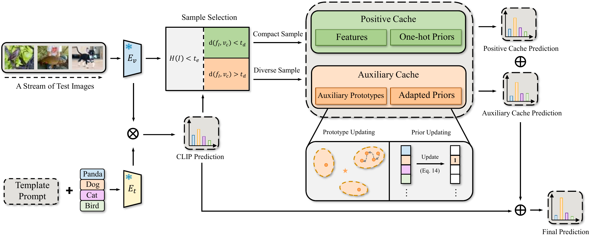

Abstract
Test-time adaptation (TTA) has emerged as a promising paradigm for adapting vision-language models to distribution shifts between pre-training and test data, with cache-based methods demonstrating remarkable effectiveness. However, existing cache-based TTA approaches construct caches solely from low-entropy test samples, yet such samples may become unreliable under distribution shifts, resulting in biased visual prototypes. Moreover, they typically maintain only a single prototype for each class, limiting their ability to capture the intra-class diversity of the target distribution. Consequently, the constructed prototypes often fail to adequately characterize the target-domain distribution, restricting adaptation performance. To address these limitations, we propose Compactness- and Diversity-balanced Dual-Cache (CDDC), a novel training-free cache-based TTA framework consisting of a positive cache and an auxiliary cache. Specifically, the positive cache employs a Compactness-Aware Selection mechanism to identify test samples residing in high-density regions of their predicted classes, yielding reliable primary prototypes. The auxiliary cache maintains multiple auxiliary prototypes for each class to capture diverse semantic patterns and better characterize the target distribution. By jointly promoting the compactness and diversity of cached features, CDDC constructs more representative prototypes and enables more effective test-time adaptation. Extensive experiments, including comparative and ablation studies across 15 downstream datasets, demonstrate that CDDC consistently achieves state-of-the-art performance, validating the effectiveness of the proposed dual-cache scheme.
